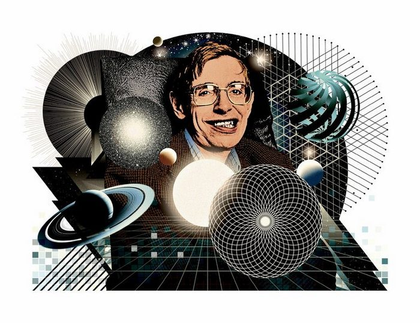

STEPHEN HAWKING

A brief history of theoretical physicist Stephen Hawking.
Stephen Hawking was regarded as one of the most brilliant theoretical
physicists in history. His work on the origins and structure of the
universe, from the Big Bang to black holes, revolutionized the field,
while his best-selling books have appealed to readers who may not have
Hawking's scientific background. Hawking died on March 14, 2018, at the
age of 76. Stephen Hawking was seen by many as the world's smartest
person, though he never revealed his IQ score. According to the news
site The Atlantic, when a New York Times reporter asked Hawking what his
IQ was, he replied with "I have no idea, people who boast about their IQ
are losers." In this brief biography, we look at Hawking's education and
career — ranging from his discoveries to the popular books he's written
— and the disease that robbed him of mobility and speech.
Stephen's Books
-
Hawking was a popular writer. His first book, "A Brief History of
Time" (10th-anniversary edition: Bantam, 1998) was first published in
1988 and became an international bestseller. In it, Hawking aimed to
communicate questions about the birth and death of the universe to the
layperson.
-
Hawking went on to write other nonfiction books aimed at
non-scientists. These include "A Briefer History of Time," "The
Universe in a Nutshell," "The Grand Design" and "On the Shoulders of
Giants."
-
He and his daughter, Lucy Hawking, also created a fictional series of
books for middle school children on the creation of the universe,
including "George and the Big Bang" (Simon & Schuster, 2012).
-
In 2014, a movie based on Hawking's life was released. Called "The
Theory of Everything," the film drew praise from Hawking, who said it
made him reflect on his own life. "Although I'm severely disabled, I
have been successful in my scientific work," Hawking wrote on Facebook
in November 2014. "I travel widely and have been to Antarctica and
Easter Island, down in a submarine and up on a zero-gravity flight.
One day, I hope to go into space."
Stephen Hawking Quotes
-
"Even if there is only one possible unified theory, it is just a set
of rules and equations. What is it that breathes fire into the
equations and makes a universe for them to describe? The usual
approach of science of constructing a mathematical model cannot answer
the questions of why there should be a universe for the model to
describe. Why does the universe go to all the bother of existing? "
-
"All of my life, I have been fascinated by the big questions that face
us, and have tried to find scientific answers to them. If, like me,
you have looked at the stars, and tried to make sense of what you see,
you too have started to wonder what makes the universe exist."
-
"Science predicts that many different kinds of universe will be
spontaneously created out of nothing. It is a matter of chance which
we are in."
-
"The whole history of science has been the gradual realization that
events do not happen in an arbitrary manner, but that they reflect a
certain underlying order, which may or may not be divinely inspired. "
-
"The greatest enemy of knowledge is not ignorance, it is the illusion
of knowledge."
Visit here for more info about Hawking